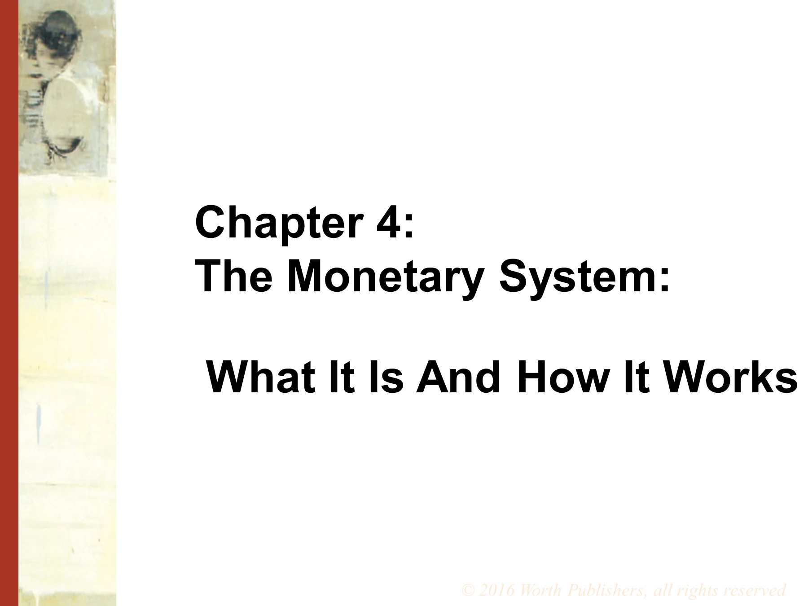

第 4 章 货币体系

第 4 章
货币体系：它是什么，如何运作
教师备注3 段
Chapter 4 covers topics that many students will have seen in their introductory course, including: the functions, types, and measures of money; fractional reserve banking and the money multiplier; the Fed’s tools for controlling the money supply; and bank runs.
As a result, you might consider a homework or quiz to get students to review these basic concepts on their own so you can use class time for the more intermediate-level material. This material includes: a more sophisticated model of the money multiplier; bank leverage and capital requirements.
The material in this chapter lends itself well to current events analysis; if you can free up class time by having students review the basics on their own, you might consider devoting class time to the discussion of current Federal Reserve policy, recent problems in banking sector, or other topical issues.